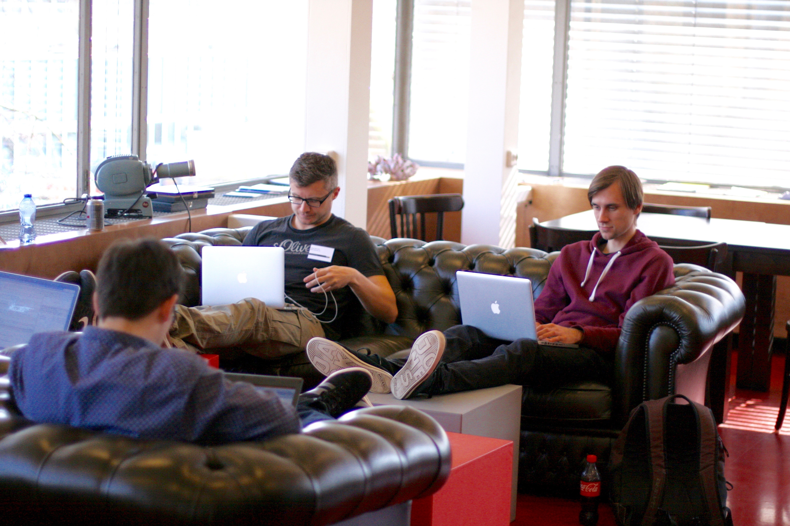

Next Meetings
30 March - 3 April 2020, Munich, Germany
30 March - 3 April 2020, Munich, Germany

We are dedicated
to creating an open, online ecosystem for machine learning. OpenML is a place for sharing data sets, machine learning algorithms, and experiments, organized into a coherent whole, connected to the people who created them. It helps you streamline your studies, automate analysis, produce reproducible results, and collaborate in real-time online.
More information on OpenML.org.
Changing the world
requires focussed, deep work. In hackathon-style events, we break away from routine and work for entire weeks on new ideas that push the scientific community forward. From building cool extensions of OpenML itself to solving data-driven problems in novel ways, we believe in open science and democritizing machine learning for everyone. Just bring your laptop, we take care of drinks, snacks, focussed time, and great company.
More pictures.

Mlr3
This year the OpenML Workshop is colocated with the mlr3-devel workshop and hackathon. If you’re interested in joining the mlr3 part, please write a short abstract about your motivation and current skills. We would need to know whether and how you are familiar with the project and in what manner you could contribute. We have limited funds available to cover parts of your expenses for flight and stay. Excited to work and hangout with the mlr3 team for a few days in beautiful Bavaria? Then get in touch with Patrick via mail.
Upcoming Meetings
Spring Hackathon 2020
30 March - 3 April 2020, Munich, Germany

Coding sprint, open to anyone who wants to contribute to the platform, or work on it directly. Participation is free, but places are limited. Please send us a short motivation of what you would love to work on in the registration. Sadly, we can't offer travel support.
Kindly hosted by

More questions? Contact us.